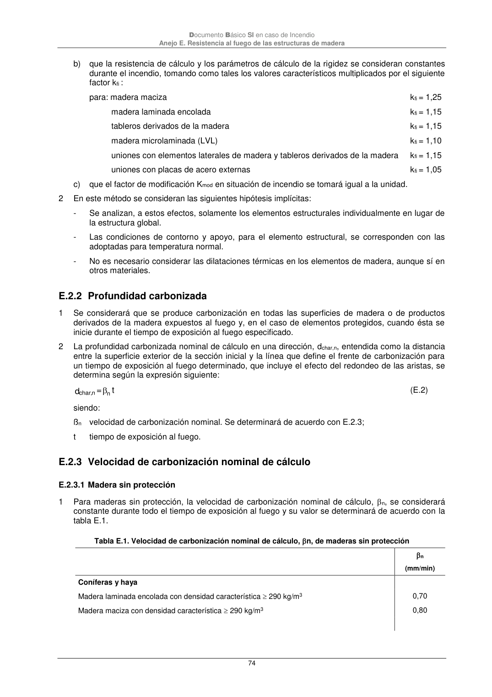

DB-SI Seguridad en caso de incendio · edición 2025-03-04 · capa oficial
Documento DB-SI-oficial · SHA-256 del PDF 0a2e78cd62471d9cc5cfe2efbc6aa39fdbad73c124aea7b039f9de96c141e105
Copia fiel del PDF fuente · Fuente oficial
Ficha de la disposición en la fuente oficial
Formatos: JSON del segmento · Markdown
Documento Básico SI en caso de Incendio Anejo E. Resistencia al fuego de las estructuras de madera 74 b) que la resistencia de cálculo y los parámetros de cálculo de la rigidez se consideran constantes durante el incendio, tomando como tales los valores característicos multiplicados por el siguiente factor kfi : para: madera maciza kfi = 1,25 madera laminada encolada kfi = 1,15 tableros derivados de la madera kfi = 1,15 madera microlaminada (LVL) kfi = 1,10 uniones con elementos laterales de madera y tableros derivados de la madera kfi = 1,15 uniones con placas de acero externas kfi = 1,05 c) que el factor de modificación Kmod en situación de incendio se tomará igual a la unidad. 2 En este método se consideran las siguientes hipótesis implícitas: - Se analizan, a estos efectos, solamente los elementos estructurales individualmente en lugar de la estructura global. - Las condiciones de contorno y apoyo, para el elemento estructural, se corresponden con las adoptadas para temperatura normal. - No es necesario considerar las dilataciones térmicas en los elementos de madera, aunque sí en otros materiales.
